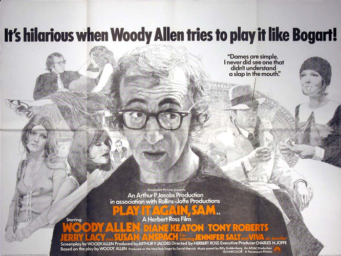
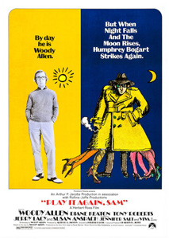
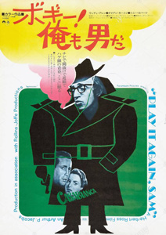
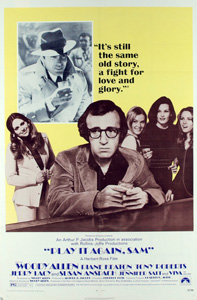
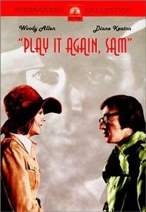
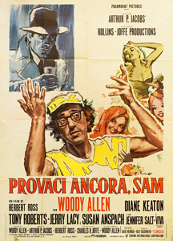
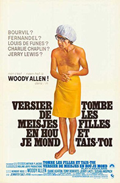

Written by and starring Woody Allen, based on his 1969 Broadway play, the film was directed by Herbert Ross, which is unusual for Allen, who usually directs his own written work. The film is about a recently divorced writer of film commentary, Allan Felix, being urged to begin dating again by his best friend and his best friend's wife. Allan identifies with the movie Casablanca and the character Rick Blaine as played by Humphrey Bogart. The film is liberally sprinkled with clips from the movie and ghost-like appearances of Bogart (Jerry Lacy) giving advice on how to treat women. The ending is a parody of Casablanca's famous ending: the fog, the trench coats worn and the dialogue are all reminiscent of the film.
Allen was fully aware that Bogart never actually said "Play It Again, Sam" in Casablanca: the title was chosen due to its clichéd familiarity. This is in keeping with the Bogart characterisation, which is itself a cliché. Woody Allen and Diane Keaton first met playing their roles on Broadway. By the time the play opened, they were lovers. When it closed, in 1970, they stopped living together.
"The working out of the parallels with Casablanca are masterly, and there are plenty of good sight gags and one-liners." - Derek Adams : Time Out
"Anyone who has anguished over whether to put on Bartok or Oscar Peterson to impress visitors should check this one out ..." - Movie Gurus





